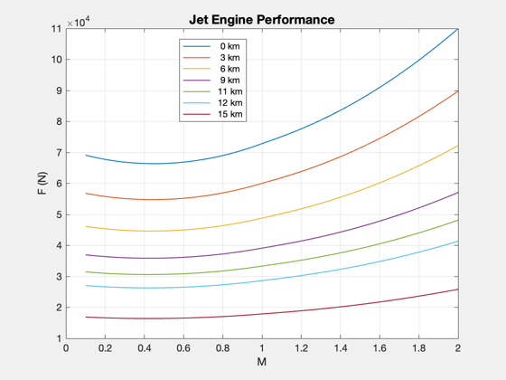

Demo JetEnginePerformance
Plot thrust as a function of mach number and altitude ------------------------------------------------------------------------ See also JetEnginePerformance, Plot2D ------------------------------------------------------------------------
%--------------------------------------------------------------------------- % Copyright (c) 2003 Princeton Satellite Systems, Inc. % All rights reserved. %--------------------------------------------------------------------------- p = struct; p.altitude = [0 3 6 9 11 12 15]*1e3; p.machNo = linspace(0.1,2); p.p0OverP9 = 0.955; p.tT4 = 1800; p.controlOn = 0; d = struct; d.units = 'mks'; d.afterburner = 0; d.altitude = 12000; d.cPC = 1004; d.gammaT = 1.3; d.cPT = 1239; d.tT4 = 1800; d.tT7 = 2400; d.machNo = 2; d.piC = 10; d.tauC = 2.0771; d.tauT = 0.8155; d.piT = 0.3746; d.piDMax = 0.95; d.piD = 0.8788; d.piB = 0.94; d.piN = 0.96; d.etaB = 0.98; d.etaC = 0.8641; d.etaM = 0.99; d.p0OverP9 = 0.5; d.hPR = 42800000; d.f = 0.03567; d.pT9OverP9 = 11.62; d.m0Dot = 50; d.piCMax = 12.3; d.throttleRatio = 1.2; d.engine = 'single spool turbojet'; g = JetEnginePerformance(p,d); Plot2D(p.machNo,g.force,'M','F (N)','Jet Engine Performance') l = cell(1,length(p.altitude)); for k = 1:length(p.altitude) l{k} = sprintf('%4.0f km',p.altitude(k)/1000); end legend(l,'location','best') %-------------------------------------- % $Id: 778608aa1185c1d25dd4373216cdae39ef1d892c $